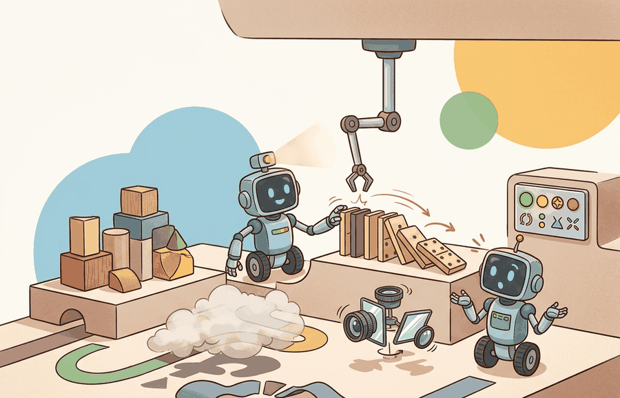

"A manipulation score tells you how well the agent grasped objects in these scenes, with this action space, under this success criterion. Change any one and you are measuring something else."
A Manipulation Benchmark Auditor

This section assumes familiarity with the benchmark validity concepts introduced in section 12.1, particularly the distinction between task name and task contract. Robosuite runs on MuJoCo, so section 11.2 on MJCF and the MuJoCo contact model is useful background for understanding controller and observation choices. The benchmark discipline established here extends directly to language-conditioned suites in section 12.3 (LIBERO, CALVIN, Meta-World) and to long-horizon household evaluation in section 12.4.
Two papers, two robots, the same benchmark name: one team scores 87% on RLBench, the other 61%, yet neither result transfers to a physical arm. The gap is not the algorithm. It is the action space, the observation modality, and the demonstration source, all quietly swapped between runs. Manipulation benchmarks are the proving ground for every contact-rich policy in embodied AI, and the field is finally moving fast enough that benchmark confusion is now the main drag on reproducible progress. By the end of this section you will know how to read a tabletop score as a precise claim, pick the suite that isolates the capability you are studying, and freeze a protocol that survives code updates and collaborator handoffs.
What This Section Builds
This section makes manipulation benchmarks operational. It teaches how to read a tabletop result as a claim about contact, vision, demonstration learning, object generalization, task generalization, or scene diversity.
The goal is not to memorize benchmark names. The goal is to design a comparison where ManiSkill3 speed, robosuite controller choices, RoboCasa scene diversity, robomimic datasets, and RLBench task variation are treated as evidence boundaries rather than interchangeable labels.
For Manipulation: ManiSkill3, robosuite, RoboCasa, robomimic, RLBench, treat the leaderboard as an instrument: it is interpretable only when the benchmark isolates the capability, fixes the protocol, and records rerunnable context.
Theory
A manipulation benchmark samples an initial object arrangement, exposes robot observations, accepts actions through a controller, and scores whether task predicates become true. The same task name can change meaning when the action space changes from end-effector deltas to joint torques, when RGB observations become privileged state, or when demonstrations come from a different controller.
Controller choice matters because physical robots have joint limits, torque saturation, and contact dynamics that amplify or suppress policy errors differently depending on the control interface. An operational-space (end-effector delta) controller hides joint-level complexity behind an inverse-kinematics layer, making grasping easier to learn but masking whether the policy can handle singularities or payload variation. A joint-torque controller exposes the full mechanical chain, so policies must reason about inertia and cable tension, precisely the challenges that determine real-robot reliability. A benchmark result obtained under one interface does not transfer to the other, and real deployments nearly always differ from the interface used during evaluation.
Mechanically, an operational-space controller computes the desired Cartesian end-effector velocity or pose, calls the robot's inverse kinematics solver to get target joint angles, then passes those targets to a low-level PD controller running at 500 Hz or higher. A joint-space controller bypasses that layer and commands torques or positions directly on each joint, requiring the policy to respect the robot's kinematic chain explicitly. robosuite exposes both modes through a unified wrapper so that swapping the controller string changes the action dimensionality, the action scale, and the physical meaning of each output dimension simultaneously, which is why freezing the controller name in the result artifact is not optional.
The split must match the claim. For imitation learning, separate training and test demonstrations so trajectory memorization is not counted as skill. For object generalization, hold out object instances or categories. For task generalization, hold out task templates, not merely random seeds for the same template.
The mechanism is a suite-specific measurement pipeline. ManiSkill3 emphasizes GPU-parallel simulation and manipulation tasks, robosuite emphasizes MuJoCo-based modular manipulation and controller choices, RoboCasa expands household-style manipulation variation, robomimic standardizes demonstration datasets and offline policy evaluation, and RLBench stresses many vision-guided task variations with demonstrations.
Worked Example
Code Fragment 1 shows a compact leakage audit for manipulation. If the training and test panels share object identifiers, task templates, or demonstration identifiers, the reported success rate may reflect familiarity rather than manipulation competence.
# Audit manipulation splits for object, task, and demonstration leakage.
# The result should be empty before a manipulation benchmark supports
# a generalization claim about held-out episodes.
from dataclasses import dataclass
@dataclass(frozen=True)
class ManipulationEpisode:
task: str
object_id: str
demo_id: str
def as_row(self) -> dict[str, object]:
return asdict(self)
train = {
ManipulationEpisode("lift", "mug_001", "demo_017"),
ManipulationEpisode("stack", "cube_002", "demo_021"),
}
test = {
ManipulationEpisode("lift", "mug_009", "demo_110"),
ManipulationEpisode("stack", "cube_002", "demo_222"),
}
train_objects = {episode.object_id for episode in train}
test_objects = {episode.object_id for episode in test}
print(f"object_leakage={sorted(train_objects & test_objects)}")ManipulationEpisode audit catches a held-out object split that still reuses cube_002. This matters for ManiSkill3, robosuite, RoboCasa, robomimic, and RLBench because shared objects or demonstrations can turn a generalization result into a memorization result.In practice, each suite gives you a maintained loader or environment API, but the loader does not decide the scientific claim. Use the official task definitions and dataset tools, then add your own manifest that records controller type, observation keys, action space, object split, demonstration split, seed set, and success predicate.
Practical Recipe
- Choose the suite that matches the claim: demonstrations for robomimic, task variety for RLBench, controller studies for robosuite, GPU-parallel training for ManiSkill3, or household-style manipulation for RoboCasa.
- Freeze train, validation, and test splits by task template, object instance, scene, and demonstration identifier.
- Use the same observation keys, action space, controller, horizon, and success predicate for every method in the comparison.
- Report per-task and per-seed success, not only a mean that hides brittle tasks.
- Label failures as perception miss, grasp/contact failure, controller saturation, task-predicate miss, recovery failure, or split leakage.
Algorithm: Manipulation Benchmark Protocol Design
Input: Research claim $c$ (e.g., object generalization), candidate policy $\pi_\theta$ with parameters $\theta$, suite candidates $S = \{s_1, \ldots, s_k\}$, seed set $\Omega$
Output: Validated result artifact $R$ with success rate $\hat{\rho}$ and full protocol provenance
- Select suite $s^* \in S$ whose design intent matches claim $c$: use ManiSkill3 for GPU-parallel rollout scale, robosuite for controller comparison $\alpha_\text{ctrl} \in \{\text{joint-space}, \text{op-space}\}$, RoboCasa for household scene diversity, robomimic for offline demonstration evaluation, or RLBench for task-variation generalization.
- Define split file $\mathcal{D} = (\mathcal{T}_\text{train}, \mathcal{T}_\text{test})$ partitioned at the task-template, object-instance, scene, and demonstration-identifier levels; verify $\mathcal{T}_\text{train} \cap \mathcal{T}_\text{test} = \emptyset$ for each dimension.
- Freeze observation keys $o$, action space $\mathcal{A}$, controller $\alpha$, episode horizon $H$, and success predicate $\sigma(\cdot)$ before any hyperparameter search over $\theta$.
- For each baseline policy $\pi^{(b)}$ and candidate $\pi_\theta$, run evaluation using identical $(\mathcal{T}_\text{test}, o, \mathcal{A}, \alpha, H, \sigma)$ with seed set $\Omega$ to yield per-episode success indicators $\{y_i^{(\omega)}\}$.
- Compute per-task success rate $\hat{\rho}_t = \frac{1}{|\Omega|} \sum_{\omega \in \Omega} y_t^{(\omega)}$ and aggregate mean $\hat{\rho} = \frac{1}{|\mathcal{T}_\text{test}|} \sum_t \hat{\rho}_t$; do not report only $\hat{\rho}$ when per-task variance is high.
- Label each failure episode with one category from: perception miss, grasp or contact failure, controller saturation, task-predicate miss, recovery failure, or split leakage; use failure counts to distinguish policy weakness from evaluation artifact.
- Run split-leakage audit: compute $\text{leak}_\text{obj} = |\{o_\text{id} : o_\text{id} \in \mathcal{T}_\text{train} \cap \mathcal{T}_\text{test}\}|$ and equivalently for scene and demonstration IDs; abort comparison if any leak count exceeds zero.
- Save result artifact $R = (\hat{\rho}, \hat{\rho}_t, \text{suite}, \text{split\_name}, o, \mathcal{A}, \alpha, H, \sigma, \Omega, \text{failure\_labels}, \text{leak\_counts})$ as a single versioned file before reporting any number.
For Manipulation: ManiSkill3, robosuite, RoboCasa, robomimic, RLBench, compare only metrics co-computed in one benchmark pass with the same task panel, wrappers, seed policy, success definition, and logged failure labels.
The common mistake is importing a baseline number from one manipulation suite or controller mode and comparing it to a new run from another. A robosuite success rate with privileged state, a ManiSkill3 RGBD policy, and an RLBench few-shot result are different measurements unless a single harness normalizes the task contract.
Consider what this looks like in practice. A team trains a diffusion policy on robomimic's human demonstrations for the lift task and reports 94% success. A second team trains a transformer policy in ManiSkill3 on the same task name and reports 81% success. The numbers appear comparable, but the first uses privileged object-pose observations and 200 human demonstrations recorded at 20 Hz with a specific gripper, while the second uses RGBD images and 50,000 environment rollouts. The 13-point gap says nothing about which policy architecture is better; it measures the protocol gap, not the algorithm gap. This confusion is not hypothetical: published leaderboards for manipulation routinely mix these conditions, and readers who do not check the protocol detail column treat the numbers as construct-matched evidence.
Think of two runners who both "ran a 5K" but one ran on a flat track in racing shoes while the other ran up a hill in boots. Comparing their times tells you about the course and footwear, not about who is faster. A manipulation benchmark score is the same: when the controller, observation modality, and demonstration source differ between two runs, the gap between the numbers measures the difference in conditions, not the difference in policy quality. Before any comparison is meaningful, every variable in the setup must be locked to the same value, just as a race comparison requires the same course, weather, and start conditions.
A manipulation team should log the suite name, task template, object IDs, scene ID, demonstration IDs, observation keys, action representation, controller, horizon, seed, success predicate, and video trace. Those fields show whether a method improves manipulation or benefits from easier objects, familiar demonstrations, or a more forgiving controller.
If the object split is leaky, the robot may look like it learned manipulation while really recognizing an old prop in a new pose.
ManiSkill3 and Isaac Lab now deliver 10,000 to 50,000 parallel environments on a single A100, enabling rollout throughputs that were impossible on CPU simulators a few years ago. Yet speed amplifies split discipline problems: a policy trained on 50 million ManiSkill3 transitions can overfit object geometry at a scale that low-throughput CPU runs would never reveal, because the volume of contact interactions etches fine-grained shape cues into policy weights. Evaluation against large robot demonstration corpora (Open X-Embodiment covers over 22 robot embodiments and 500,000 trajectories; the Droid dataset adds 76,000 real-world Franka demonstrations) means a benchmark must prove held-out tasks are held out at the object instance, scene layout, language phrasing, and gripper-trajectory levels simultaneously. Policies pre-trained on RT-X or LeRobot data then fine-tuned on robomimic demonstrations can exploit subtle gripper velocity signatures that appear in training trajectories but not in held-out episodes, so split audits now need to track kinematic fingerprints, not only object and scene identifiers.
Can you name the manipulation suite, task templates, object split, demonstration split, observation keys, controller, action space, horizon, seeds, and success predicate? If not, the experiment boundary is still too vague.
Manipulation benchmarks become useful when they make hidden choices visible. A policy trained on robomimic demonstrations may be excellent at reproducing dataset actions but weak under new object placements. A policy trained in ManiSkill3 may benefit from high-throughput exploration but still need an object and task split that tests transfer. A robosuite controller comparison may be valid only inside the chosen action interface.
The graduate-level habit is to ask what each suite contributes to the evidence. ManiSkill3 and Isaac-style GPU workflows help scale rollout counts, robosuite makes controller and robot-composition choices explicit, RoboCasa and BEHAVIOR-style assets broaden household variation, robomimic defines offline demonstration evaluation, and RLBench tests task-level variation with demonstrations. The paper claim should name which of those dimensions it actually measured.
Why Each Suite Was Built
Each suite exists because a specific research question was underserved. ManiSkill3 was designed to answer questions about sample efficiency at scale: when you need millions of rollouts to learn contact-rich behavior, CPU-serial simulators become the bottleneck, so GPU-parallel environments eliminate that bottleneck and let the research question be about the policy, not the infrastructure. robosuite was designed because controller choice had been treated as an implementation detail rather than a scientific variable; making it explicit and modular lets a single paper compare joint-space and operational-space control on identical tasks.
RoboCasa addresses the narrowness of tabletop-only benchmarks: real kitchens have layout variation, distractor objects, and diverse appliances, so a policy that works on a fixed table with three canonical objects has not been tested on the actual distribution. robomimic exists because most imitation-learning papers before it trained and evaluated on the same demonstrations without a held-out set, making reported numbers unrepeatable; its standardized dataset releases and evaluation protocol convert a reproduction problem into a comparison problem. RLBench targets task-level generalization: its 100-plus task variants, each with multiple language phrasings and visual configurations, are calibrated so that a policy cannot succeed by recognizing a single fixture arrangement. Knowing why each suite was built tells you immediately when to use it and when its design assumptions do not match your research question.
| Suite | Useful for | Protocol detail to freeze |
|---|---|---|
| ManiSkill3 | GPU-parallel manipulation and reinforcement learning workflows | Environment count, rendering mode, task IDs, object split, seed list, and success predicate. |
| robosuite | MuJoCo-based robot manipulation with modular robots and controllers | Robot, controller, action space, horizon, observation keys, and reward or success definition. |
| RoboCasa | Everyday household manipulation with richer scene and object variation | Scene split, object instance split, task template split, and language or goal specification. |
| robomimic | Offline imitation and demonstration-driven policy evaluation | Dataset version, demo IDs, train/test split, observation modality, and evaluation rollout seeds. |
| RLBench | Vision-guided multi-task and few-shot manipulation | Task families, variation numbers, demonstration split, camera set, and success predicate. |
A robust manipulation benchmark starts with a split file. The split file should list task templates, object IDs, scene IDs, demonstration IDs, and seeds. The evaluation runner should consume that file for every method so a new policy cannot quietly choose easier episodes.
- Choose one primary suite and write the task contract in that suite's native terms.
- Freeze task, object, scene, demonstration, and seed splits before hyperparameter tuning.
- Evaluate baselines and candidates with the same observation keys, action space, controller, and horizon.
- Save per-episode success, reward, horizon length, contact or grasp status, and video trace.
- Aggregate by task family and seed so one easy task cannot dominate the conclusion.
Code Fragment 2 turns the manipulation protocol into a result artifact. The important field is split_name, because it keeps a reported success rate attached to the held-out condition it actually measured.
# Record a manipulation result with the split and controller attached.
# A success rate without these fields is not comparable across suites
# or even across two runs from the same suite.
from dataclasses import dataclass, asdict
@dataclass
class ManipulationResult:
suite: str
split_name: str
controller: str
observation: str
seeds: tuple[int, ...]
success_rate: float
def as_row(self) -> dict[str, object]:
return asdict(self)
result = ManipulationResult(
suite="RLBench",
split_name="heldout_task_variations",
controller="end_effector_delta_pose",
observation="front_rgb+proprioception",
seeds=(10, 11, 12, 13, 14),
success_rate=0.62,
)
print(result.as_row())ManipulationResult keeps success_rate tied to the suite, split, controller, observation modality, and seed list. Those fields prevent a reader from confusing a held-out task-variation result with a held-out object or held-out demonstration result.When a manipulation experiment fails, localize the failure before changing the model. Replay the episode and tag whether the failure came from perception, grasp approach, contact instability, controller saturation, recovery, task-predicate scoring, or a held-out split mismatch. This prevents a model change from masking an evaluation problem.
Students often assume that a high success rate on a manipulation benchmark (ManiSkill3, robosuite, RoboCasa, robomimic, or RLBench) means the policy will work on a physical robot. This is wrong because each suite defines success through a simulator predicate evaluated under a specific controller, observation modality, and object set that rarely matches the noise, latency, and sensor calibration of a real deployment. The correct mental model is that a benchmark score is evidence about the policy under the exact protocol used, not a certificate of physical competence. Real-robot transfer requires a separate evaluation that accounts for actuation delay, camera calibration error, contact dynamics mismatch, and object texture variation that simulators approximate rather than reproduce.
Manipulation benchmarks are useful when their suite choice, split design, controller, observations, seeds, and success predicates match the manipulation claim being made.
Pick one manipulation claim, such as object generalization or task generalization. Choose ManiSkill3, robosuite, RoboCasa, robomimic, or RLBench, then specify the split fields and name one leakage path that would invalidate the result.
Section 12.3 → shifts from one manipulation panel to transfer over task sequences, language instructions, adaptation budgets, and forgetting.
ManiSkill Contributors. "ManiSkill Documentation."
ManiSkill provides manipulation tasks, demonstrations, GPU-parallel workflows, and documentation for robot-learning experiments. It is relevant when this section asks how benchmark design turns simulator capability into comparable evidence. Readers should connect this source to manipulation: maniskill3, robosuite, robocasa, robomimic, rlbench when deciding what is reusable, what is benchmark-specific, and what must be remeasured.
RoboCasa Team. "RoboCasa Documentation."
RoboCasa documents everyday manipulation tasks and simulation assets, including the 2024 release lineage and later RoboCasa365 expansion. Readers should use it to study how task diversity and environment generation affect benchmark claims. Readers should connect this source to manipulation: maniskill3, robosuite, robocasa, robomimic, rlbench when deciding what is reusable, what is benchmark-specific, and what must be remeasured.
Mandlekar, A. et al. "robomimic Documentation."
robomimic provides datasets and algorithms for learning from demonstrations. It matters here because benchmark evaluation often depends as much on dataset format and split discipline as on simulator physics. Readers should connect this source to manipulation: maniskill3, robosuite, robocasa, robomimic, rlbench when deciding what is reusable, what is benchmark-specific, and what must be remeasured.
James, S. et al. (2019). "RLBench: The Robot Learning Benchmark and Learning Environment." arXiv.
RLBench frames a large set of vision-guided manipulation tasks with demonstrations and task variation. It is useful for readers studying few-shot, multi-task, and manipulation benchmark design. Readers should connect this source to manipulation: maniskill3, robosuite, robocasa, robomimic, rlbench when deciding what is reusable, what is benchmark-specific, and what must be remeasured.
Stanford Vision and Learning Lab. "BEHAVIOR-1K."
BEHAVIOR-1K grounds household embodied AI tasks in human needs and long-horizon mobile manipulation. It gives benchmark designers a concrete example of task suites that go beyond isolated tabletop success rates. Readers should connect this source to manipulation: maniskill3, robosuite, robocasa, robomimic, rlbench when deciding what is reusable, what is benchmark-specific, and what must be remeasured.